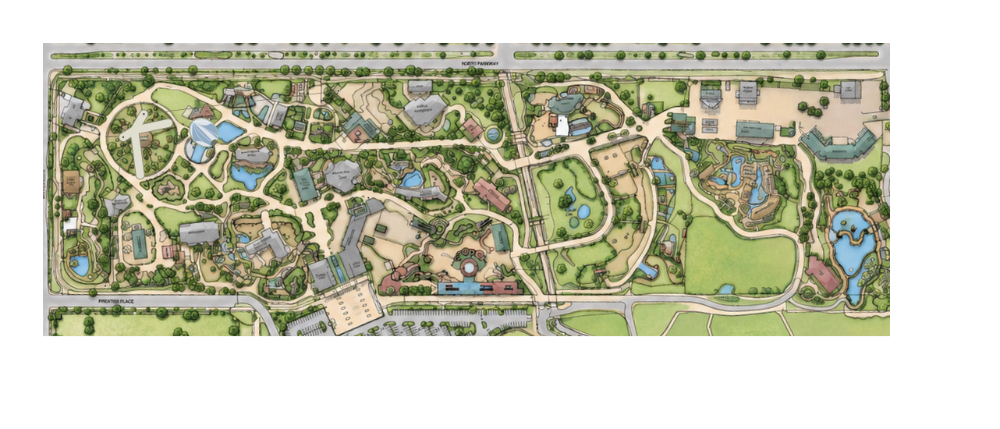

Published events
Loading published events…
Read-only public dashboard · no enrollment required
Loading public operational totals…
This viewer uses only the existing public operational and event sources.

Illustrated map only. No individual cleaning pins or employee locations are inferred from aggregate totals.
Loading published events…